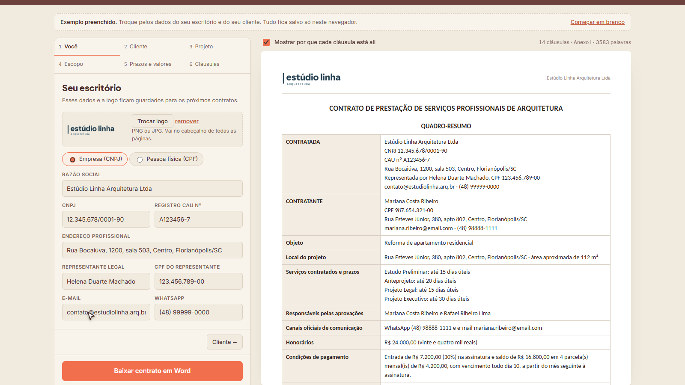
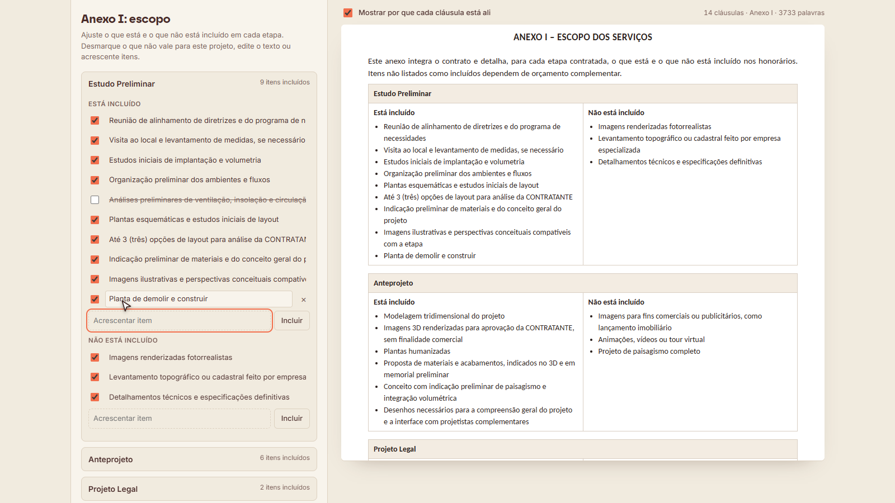
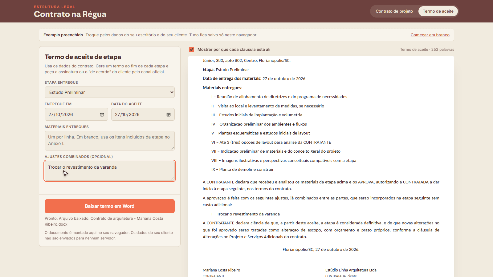

Guia rápido: da proposta aprovada ao contrato assinado, sem deixar brecha no escopo.
Ele transforma o que você já combinou na proposta em um contrato de projeto completo, em Word, com a logo do seu escritório. Cada cláusula vem com a explicação de por que está ali.

À esquerda você preenche; à direita o contrato se monta na hora, com as explicações em destaque.
O contrato protege de verdade quando conversa com a proposta e quando cada etapa é aprovada por escrito. O fluxo abaixo amarra as duas pontas.
Dados do escritório, registro no CAU e a logo. Ficam salvos para os próximos contratos.
Pessoa física ou empresa. Para empresa, informe também quem assina por ela.
Objeto, endereço e as etapas contratadas: arquitetura, interiores e obra. O contrato muda conforme a seleção.
O Anexo I. Desmarque, edite e acrescente itens até a lista ficar igual à proposta.
Prazo de cada etapa, devolutiva do cliente, número de revisões e a forma de pagamento.
Opções que você liga e desliga, os valores de multa e garantia, o foro e a data.
A maior parte dos desentendimentos em projeto nasce da mesma frase: “achei que estava incluído”. O Anexo I responde a essa frase antes que ela apareça.

No passo Escopo, cada item pode ser desmarcado, editado ou acrescentado.
| Vago | Conferível |
|---|---|
| Opções de layout | Até 2 (duas) opções de layout para análise |
| Imagens 3D | Até 6 imagens renderizadas dos ambientes social e suíte |
| Acompanhamento da obra | Visitas técnicas agendadas, em média 2 (duas) por mês, por até 4 meses |
| Projeto de marcenaria | Projeto de marcenaria da cozinha, dos dormitórios e do home office |
Ela já vem preenchida com o que costuma gerar cobrança indevida em cada etapa: projetos de engenharia, protocolo na prefeitura, imagens para venda, compra de produtos. Mantenha o que se aplica e acrescente o que você sabe que o cliente costuma pedir “de brinde”.
No passo Cláusulas você ajusta o contrato ao perfil de cada cliente. Estas são as decisões que mais pesam.
| Silêncio do cliente vira aprovação | Desligada, o silêncio só suspende o seu prazo. Ligada, a etapa é aprovada depois de um lembrete com mais 5 dias úteis. Ligue se você costuma ficar parado esperando retorno, e guarde o lembrete enviado. |
| Aprovação por mensagem curta ou emoji | Deixa claro que “pode seguir” ou 👍 no canal oficial valem como aprovação. Recomendado deixar ligada. |
| Multa se o cliente desistir sem motivo | Multa sobre o que faltava pagar, além do que já foi feito. Desligue em contratos pequenos ou quando a negociação pedir. |
| Proibir uso em inteligência artificial | Impede que o cliente coloque o seu projeto numa ferramenta para gerar variações ou replicar em outro imóvel. |
| Uso no portfólio | Permite mostrar o projeto e fotos da obra pronta, sem dados do cliente. Desligue para clientes que pedem sigilo. |
| Cliente não pode contratar sua equipe | Útil para quem trabalha com colaboradores fixos e atende construtoras e incorporadoras. |
| Horário de atendimento | Limita a obrigação de responder a dias úteis e horário comercial. |
| Taxa do RRT paga pelo cliente | Quando desligada, o contrato só diz que você emite o RRT, sem definir quem paga a taxa. |
Pedir ajuste é normal e não precisa travar o fechamento. Uma referência:
Costuma ser negociável: prazos, número de revisões, percentual de multa, dias de garantia, forma de pagamento, horário de atendimento.
Vale manter: a separação entre projeto e execução, a aprovação das etapas por escrito, a lista do que não está incluído e os direitos autorais sobre o projeto.
Faça o ajuste no app e baixe de novo, assim o Word fica coerente do começo ao fim.
Na aba Termo de aceite, escolha a etapa, a data de entrega e liste os materiais entregues. Se houver ajustes já combinados, registre no campo próprio.
Com o termo assinado, a etapa fica encerrada: o que foi aprovado vira base da próxima, e mudanças depois disso são serviço adicional, com orçamento próprio.
Se o cliente preferir aprovar pelo WhatsApp, envie o termo em PDF e peça o “de acordo” no canal oficial informado no contrato.

O termo aproveita os dados do contrato: partes, objeto e itens da etapa.
Sim. No passo Projeto há um grupo só de Interiores (pré-projeto, layout, 3D e executivo de interiores), que pode ser combinado com etapas de arquitetura e de obra.
Escolha “Empresa (CNPJ)” no passo Cliente e informe o representante legal. O Quadro-Resumo passa a mostrar quem assina pela empresa.
Vale. O contrato já traz a cláusula que reconhece a assinatura eletrônica, inclusive por plataformas que não usam certificado ICP-Brasil, como gov.br, Clicksign e D4Sign.
O contrato tem espaço para duas. Elas não são obrigatórias para o contrato valer, mas facilitam a cobrança judicial se um dia ela for necessária.
Pode. Para mudanças de estrutura, como trocar etapas ou opções, prefira ajustar no app e baixar de novo, porque a numeração e as referências entre cláusulas são refeitas automaticamente.
Como os dados ficam no navegador onde você preencheu, em outro computador o app começa do zero. Guarde sempre o Word baixado de cada contrato.
Sim. Correções de redação e ajustes por mudança na lei ou nas normas do CAU entram automaticamente, sem custo. Quando sair uma versão nova, com recursos que não existem hoje, você recebe um aviso no e-mail da compra, com condição especial para quem já comprou.